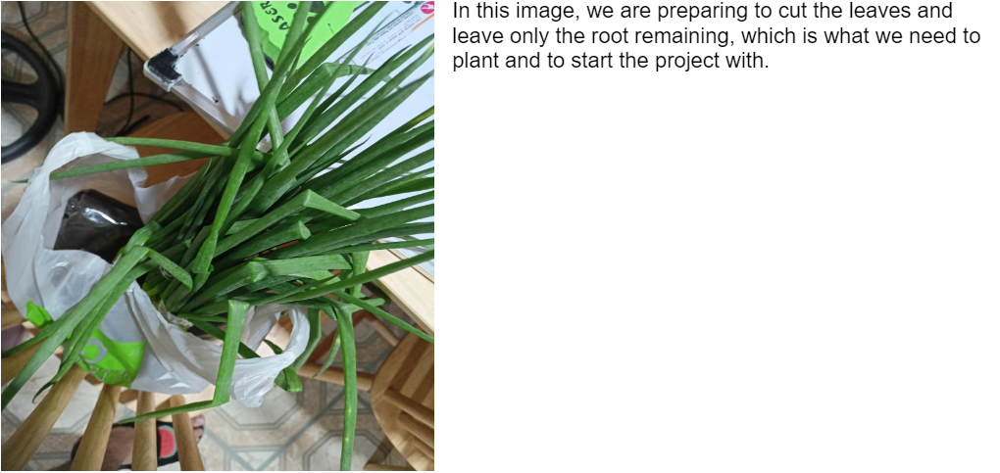
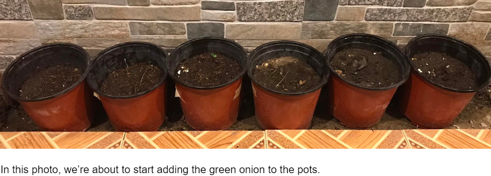

The importance of this research is to be able to understand how combined composting works and how it’s produced, which will help us understand composting further.
Combined composting is a combination method of open-air composting, direct composting, vermicomposting, and EMO composting in which you dispose of all of your kitchen waste to be used to nourish the soil.
The value of composting to communities and the environment is that it allows all the waste to be recycled and used for helping the plants and crops have healthy soil because composting allows the plants to retain moisture and suppresses plant diseases and pests.
It also reduces the need for chemical fertilizers. and encourages the production of beneficial bacteria and fungi that break down organic matter to create humus, a rich, nutrient-filled material.
Composting achieves benefits for the environment as it allows us to reduce the waste we have and turn it into compost. Since "composting" is the most recommended method for recycling food wastes,
"Composting is a process that involves the biological decomposition of organic matter into soil conditioner under controlled conditions"
(El Haggar et al. 1998).The benefits it provides to the community are that it allows the community to get rid of their biodegradable waste to lessen the waste in their community and turn it into compost to be used for their plants and crops to increase
the quality of the products they receive from it, which leads to more of their products being sold.
The institution SAKADAB can benefit from composting in general and from our composting project specifically by helping them learn the benefits of composting and how it can help their institution become more sustainable for their cause.
Since composting allows the institution to be able to dispose of their waste and recycle it to be used to enhance the quality of their soil, which can also enhance the quality of their products that are rooted from plants or crops,
increasing the quality of their products can also lead to more customers buying them,
which will help them become more sustainable.
Documentation of the Project:


Project Details
Project Title
The study of Combined Compot Composting and the effect that its presence has on Allium fistulosum’s plant height.
Problem Statement
Using Combined Compot Compost that contains phosphorus, nitrogen and potassium and adding it to the plant will increase the plant height of green onions.
Independent Variable
Combined Compot Compost (Phosphorus, nitrogen and potassium)
Dependent Variable
The effect of the presence of Combined Compost Composting and its affect on the height of Green onion.
Gabriel Luis L. Royo is the Group Leader for Group 3A, he's also a club member of Ateneo Society of Computer Enthusiats. He enjoys reading mangas, lightnovels and enjoys watching anime in his free time. He's quite lazy and would prefer to just stay at home and do his own thing rather than going outside, but he's still diligent in doing his chores and his tasks.
John Brendan Alpapara
Web Designer for S.I.P
John is a very kind, caring and understanding person. He is also very sporty and loves to be with his friends all the time. He's a very obedient and outgoing both as a son and a brother. He really loves to travel with his family and friends, and lastly he is very friendly to everyone around him.
Shane Thea Tapdasan
Web Designer for Background
Shane is a very understanding, kind, and hardworking person. She appreciates spending time with her friends and is a very caring person towards them. Lastly she enjoys quality time with her family and is very thoughtful.
Troy John Maban
Webpage Designer for M.A.P.E.H
Troy is a very obedient boy to his mother and a caring big bro to his lil siblings. But he is not perfect, and has flaws as well as he also acts violent and solve problems with violence but he always tries to control it. Lastly Troy likes watching anime and tiktok and also love playing online games with his friends.